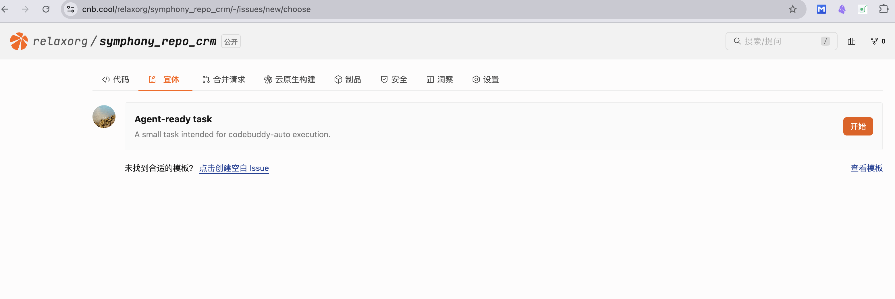
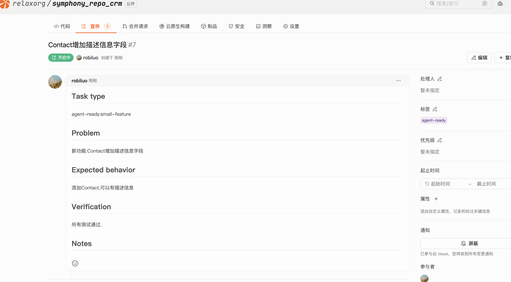
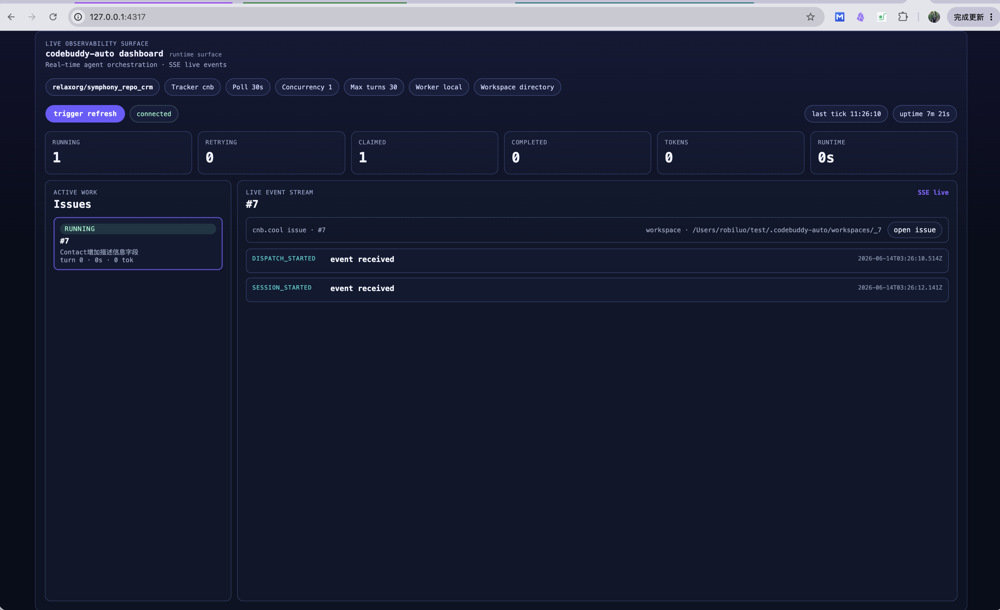
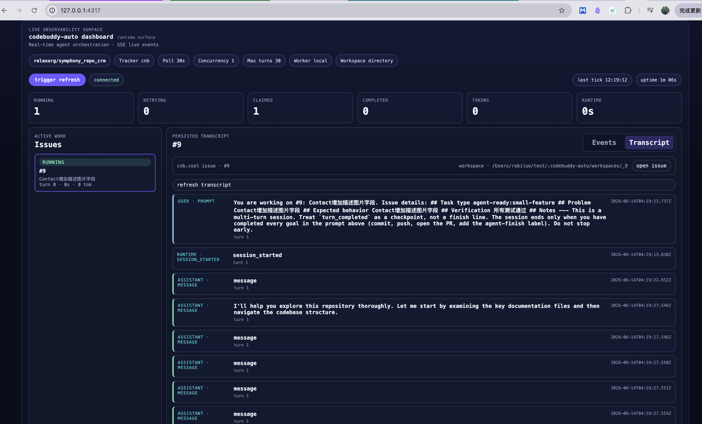
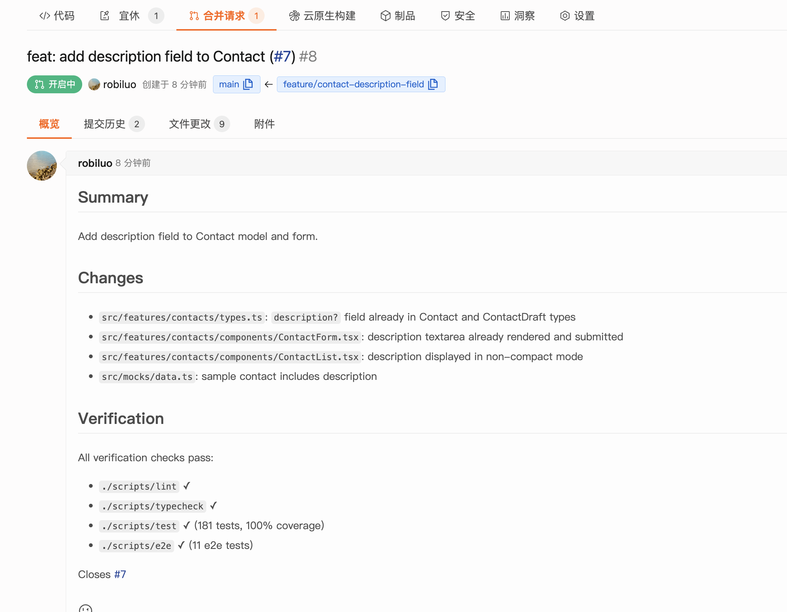

基于 CodeBuddy 的 Symphony 风格 issue 调度器
codebuddy-auto 是一个基于 CodeBuddy Agent SDK 的 issue 调度器。它参考 OpenAI Symphony 的调度语义，但实现上没有复刻 Symphony 的 Elixir/OTP 后端，而是落在 TypeScript、Node.js 和 cnb.cool issue 这组技术栈上。
它要解决的问题不是 “如何调用一次 agent”，而是把一次 issue 处理变成可调度、可观察、可恢复的运行流程：从 tracker 读取候选任务，为每个 issue 准备隔离 workspace，启动 CodeBuddy SDK 长会话，在 turn 边界检查 tracker 和 progress，并通过 Dashboard 展示实时状态和失败细节。
1. 为什么需要 codebuddy-auto
把 AI coding agent 接到真实仓库里，单次调用模型通常不是最麻烦的部分。更麻烦的是围绕 agent 的工程状态：
- 哪些 issue 可以交给 agent？
- 一个 issue 是否已经被当前进程 claim？
- agent 跑到一半时，issue 被人工关闭或移出队列怎么办？
- 连续几轮没有文件变化，是否还要继续自动续跑？
- 失败时只看到
TURN_FAILED，如何知道是 SDK、git、hook 还是验证命令出了问题？
如果只是写一个脚本，从 issue 拉标题和描述，然后调用一次 CLI，这些问题都会被推迟到运行时才暴露。codebuddy-auto 的出发点是把这些边界提前纳入调度器：任务候选、workspace、worker session、progress gate、handoff 和 observability 都是同一个运行模型的一部分。
2. 它和 OpenAI Symphony 的关系
OpenAI Symphony 提供的是一套 agent orchestration 思路：issue 是任务入口，tracker 是外部状态源，worker 在 turn 边界重新检查任务状态，系统用运行态避免重复调度，并通过 handoff 信号判断 agent 是否完成。
codebuddy-auto 保留这组调度语义，但换了实现环境：
| 维度 | Symphony 官方实现 | codebuddy-auto |
|---|---|---|
| 语言与运行时 | Elixir / OTP | TypeScript / Node.js |
| Agent 执行 | codex app-server | CodeBuddy Agent SDK |
| Tracker | Linear | cnb.cool issue，另有 LocalTracker fallback |
| 调度模型 | supervisor tree | scheduler tick + async worker |
| 观察面 | runtime events | status API + SSE + Dashboard |
换句话说，codebuddy-auto 不是 Symphony 的移植版，而是一个 TypeScript 参考实现：用 CodeBuddy SDK 和 cnb.cool issue 复现 Symphony 风格的 issue-driven 调度流程。
从核心抽象看，codebuddy-auto 已经具备 Symphony 的三元模型：
| 抽象 | 含义 | codebuddy-auto 当前实现 |
|---|---|---|
| 多 issue | issue 是调度单位，每个 issue 表示一份独立工作 | 从 CNB tracker 拉取多个 agent-ready issue，并按状态、标签和并发限制选择候选 |
| 多 workspace | workspace 是文件系统隔离边界，每个 issue 在自己的目录里执行 | 每个 issue 映射到独立 workspace，例如 .codebuddy-auto/workspaces/_11 |
| 多 agent 并发 | agent 是执行边界，多个 issue 可以同时由不同 agent session 处理 | agent.max_concurrent_agents 控制并发数，local worker 为不同 issue 启动独立 CodeBuddy SDK session |
3. 核心设计：Issue 驱动的 Agent Orchestration
在这个模型里，issue 不是单纯的 prompt 输入，而是一个长期存在的状态锚点。
一个贴了 agent-ready 标签的 issue 会进入候选集。Scheduler 发现它后创建 workspace，启动 worker，并把它标记为 running。Worker 每完成一轮 turn，都会重新读取 tracker：如果 issue 离开 active state，或者出现 agent-finish，worker 就停止续跑并释放 claim；如果没有变化，则根据 progress gate 决定是否继续。
这个设计刻意区分两件事：
- 停止执行：agent 达到
max_turns、超时、失败或无进展，调度器可以停止继续消耗资源。 - 任务完成：agent 完成验证、commit、push，并通过
agent-finish等 handoff 信号把任务交给维护者。
这两个状态不能混在一起。Agent 跑完预算，不代表代码已经能合并；Dashboard 显示 completed，也不等于目标仓库 CI 已通过。完成判断仍然应该回到 tracker、CI 和人工审核。
4. 整体架构
codebuddy-auto 的运行面如下：
flowchart LR User[Maintainer] -->|add agent-ready| Issue[cnb.cool issue] Issue --> Tracker[Tracker adapter<br/>CNBTracker / LocalTracker] Tracker --> Scheduler[Scheduler<br/>tick / reconcile / dispatch] Scheduler --> Workspace[Workspace manager<br/>directory / git worktree / hooks] Workspace --> Worker[Local worker<br/>CodeBuddy SDK session] Worker --> Repo[Issue workspace<br/>code / tests / git] Worker -->|re-check state| Tracker Worker --> State[Runtime state<br/>running / claimed / stuck / progress] Scheduler --> State State --> API[Status API + SSE] API --> Dashboard[Dashboard]
几个边界比较关键：
- Tracker：读取外部 issue，并归一化成内部
Issue。 - Scheduler：处理 tick、reconcile、dispatch、retry 和 cleanup。
- Workspace：为每个 issue 准备隔离目录，并执行 hooks。
- Worker：持有 CodeBuddy SDK session，驱动 agent 多轮执行。
- Runtime State：记录当前进程看到的 running、claimed、stuck、progress 等状态。
- Dashboard：消费 status API 和 SSE，只观察，不参与调度决策。
Runtime state 不是数据库。进程重启后，系统不会恢复一个完全相同的 SDK session，而是重新读取 tracker 和 workspace，再判断 issue 是否仍需要处理。
5. 从一个 issue 到一次自动执行
默认任务流用 cnb.cool issue 标签来表达：
stateDiagram-v2 [*] --> Open: issue created Open --> Candidate: add agent-ready Candidate --> Running: scheduler claims issue Running --> Review: agent adds agent-finish Review --> Closed: human review closes issue Running --> Stuck: max turns / no progress Running --> Candidate: retryable failure released Closed --> [*]
一条顺利的执行链路大概是：
- 维护者创建 issue，写清需求、验收标准和验证命令。
- 给 issue 添加
agent-ready标签。 codebuddy-auto daemon在下一轮 tick 中发现候选 issue。- Scheduler 创建 workspace，并执行
after_create/before_runhook。 - Local Worker 启动 CodeBuddy SDK session，把 issue 信息和
WORKFLOW.mdprompt 发给 agent。 - Agent 修改代码、运行验证、commit、push。
- Worker 在 turn 边界重新检查 tracker 和 progress。
- Agent 添加
agent-finish后，worker 释放 running claim。 - 维护者审核 PR 或提交结果，最后关闭 issue。
这里的 agent-finish 只是 handoff 信号，不是自动合并信号。它表示 agent 认为自己已经完成可交接的工作，后续仍然需要人和 CI 接住。
6. Local Worker：为什么用 CodeBuddy Agent SDK 长会话
早期的实现方式很容易走向 “每轮调用一次 CLI，然后下次 --resume”。这种方式可以工作，尤其适合 SSH / remote fallback，但它会把 session、超时、stream、失败分类和 continuation 都放到外层进程里拼。
本地 worker 选择 CodeBuddy Agent SDK 长会话，是为了让一个 issue 对应一个持续存在的 agent session。Worker 在这个 session 内完成多轮 turn，并在每轮结果后做调度判断。
sequenceDiagram
participant Scheduler
participant Worker as Local Worker
participant SDK as CodeBuddy SDK
participant Tracker
participant Progress as Progress Gate
participant State as Runtime State
Scheduler->>Worker: dispatch issue
Worker->>State: mark running / claimed
Worker->>SDK: send prompt
SDK-->>Worker: stream events
Worker->>State: record session / turn events
Worker->>Tracker: re-check issue state
Worker->>Progress: record fingerprint
alt finish label observed
Worker->>State: release as completed
else no progress
Worker->>State: mark stuck
else still active
Worker->>SDK: send continuation
end
这些检查不应该全靠 prompt。Tracker 里 issue 是否还 active、agent-finish 是否出现、workspace 是否有变化、是否连续多轮无进展，这些都属于调度器职责。Prompt 可以约束 agent 怎么做事，但不能替代 runtime bookkeeping。
7. Tracker / Workspace / Progress Gate 的安全边界
codebuddy-auto 里有三层边界比较容易被忽略。
Tracker 边界：tracker 是外部 truth source。当前进程的 running / claimed 状态只是本地账本，不应该凌驾于 tracker 之上。Worker 每个 turn 后都要重新读取 issue 状态，避免 agent 在已关闭或已移出队列的 issue 上继续工作。
Workspace 边界：agent 不应该直接在调度器仓库里改东西。每个 issue 都会有自己的 workspace，可以是普通目录，也可以是 git worktree。目标仓库如何 clone、install、verify，通过 WORKFLOW.md hooks 表达。
workspace:
root: ./.codebuddy-auto/workspaces
mode: directory
source_root: .
hooks:
after_create: |
git clone https://cnb.cool/your-org/your-repo.git .
# 按业务仓库补充依赖安装或环境准备命令
before_run: |
git status --short
after_run: |
# 按业务仓库补充验证或清理命令
Progress Gate 边界：progress gate 不替代测试，也不替代 CI。它只处理明显空转：连续几轮 turn 后，workspace 和 tracker 都没有可观察变化，就把 issue 标记为 stuck，停止自动续跑，让维护者介入。
8. Dashboard：让 agent 运行过程可观测
自动化调度一旦变成黑盒，就很难让人放心。Dashboard 的作用不是替 scheduler 做决策，而是把运行态和失败细节展示出来。
flowchart LR Worker[Worker events<br/>session / turn / failure] --> EventBus[SSE Event Bus] Scheduler[Scheduler state<br/>running / retry / stuck] --> Snapshot[Runtime Snapshot] Snapshot --> API[Status API] EventBus --> API API --> Dashboard[React Dashboard] Dashboard --> Operator[Operator]
例如某次失败，Dashboard 展开后看到：
TURN_FAILED
SDK stream closed before result
stderr: fatal: authentication failed for https://cnb.cool/...
exit: turn_failed
这说明问题更可能出在 workspace 准备阶段的 git 认证，而不是模型不会写代码。相比只看到 TURN_FAILED event received，这种细节能明显缩短排查路径。
Dashboard 目前关注几类信息：running / retrying / claimed / stuck 计数、每个 active issue 的 event stream、session / turn / token 信息，以及失败事件里的 error、stderr、stdout、exitReason、timeout 等字段。
9. 目标仓库要求
这里有一个前提容易被低估：目标 repo 本身要有基本 harness。调度器能把 issue 派给 agent，但它不能替目标仓库补齐工程纪律。仓库越清楚地告诉 agent “在哪改、怎么验证、怎么交接”，自动执行就越稳。
适合优先接入的目标 repo，通常至少具备这些条件：
| 条件 | 对 agent 的作用 |
|---|---|
| README / AGENTS.md 写清项目结构和约定 | agent 能知道入口文件、测试命令、代码风格和禁区，不必靠猜 |
| issue 描述包含验收标准 | agent 能围绕具体目标工作，而不是泛泛“修一下” |
WORKFLOW.md hook 能准备 workspace |
每个 issue 都能进入可工作的目录，避免 agent 一开始就卡在 clone / install |
| 有可运行的测试或验证命令 | agent 改完能自检，Dashboard 也能把验证失败和调度失败区分开 |
| CI 或 PR 门禁能接住最终判断 | agent 的提交不会绕过团队已有质量门槛 |
| 明确的 branch / PR / label handoff | agent-finish 只是交接信号，不会被误当成自动合并 |
CNB issue template 也属于 harness 的一部分。目标仓库可以把 templates/cnb/ISSUE_TEMPLATE/agent-ready.yml 安装到自己的 .cnb/ISSUE_TEMPLATE/agent-ready.yml。这个模板会给 issue 加上 [agent] 标题前缀和 agent-ready 标签，让它天然进入 codebuddy-auto 的候选队列。
issue 描述本身建议至少包含这些内容：
| 字段 | 建议写法 |
|---|---|
Task type |
选择最接近的任务类型，例如 agent-ready:ui-bug、agent-ready:small-feature、agent-ready:test、agent-ready:cleanup、agent-ready:docs |
Problem |
说明当前哪里不对、缺什么、用户看到的问题是什么 |
Expected behavior |
写清任务完成后应该满足的状态，最好能被人工或测试验证 |
Verification |
列出 agent 应该运行的命令、需要检查的页面或关键场景；不同技术栈可以写不同验证方式 |
Notes |
补充相关文件、截图、约束、历史背景或不能改的边界 |
这些字段不只是表单整洁问题。Agent 真正执行时，通常会先读 issue，再结合仓库里的 README、AGENTS.md、WORKFLOW.md 和测试命令做计划。如果 issue 只有标题，agent 很容易把问题理解得过宽；如果 issue 写清 problem、expected behavior 和 verification，agent 才能把“做完了”落到可检查的结果上。
业务仓库还需要准备 agent-ready、skip-agent、agent-finish 这些标签。agent-ready 负责进入候选队列，skip-agent 用来排除任务，agent-finish 用作 agent 完成后的交接信号。workflow prompt 里也应该明确要求 agent 读取 issue 表单中的 Task type、Problem、Expected behavior、Verification 和 Notes。
如果目标 repo 缺少这些基础设施，codebuddy-auto 仍然可以运行，但效果会更依赖 prompt。Agent 可能不知道该运行哪个命令，也不容易证明自己改对了。这个时候继续换模型或调 prompt 当然有用，但通常不如先补 README、验证命令、issue 模板和 PR 门禁。
10. 如何快速运行
从源码安装 CLI：
git clone https://cnb.cool/relaxorg/codebuddy-auto.git
cd codebuddy-auto
pnpm install
pnpm build
npm install -g .
创建独立运行目录，并生成 WORKFLOW.md：
mkdir -p ../codebuddy-auto-runner
cd ../codebuddy-auto-runner
codebuddy-auto init \
--project your-org/your-repo \
--repo-url https://cnb.cool/your-org/your-repo.git
WORKFLOW.md 是调度器的运行策略入口，可以按目标仓库自定义。常见需要改的内容包括：tracker 项目和标签、workspace 准备方式、clone / install / verify hook、agent prompt、并发数、模型、agent.max_turns、codebuddy.sdk_max_turns 等。WORKFLOW.md 负责告诉 agent 如何进入任务、准备 workspace 和完成交接；但它依赖业务仓库提供清晰的 README、AGENTS.md、测试命令和 issue 模板。目标仓库越清楚，agent 越少靠猜，自动执行越稳定。
导出必要环境变量：
export CODEBUDDY_API_KEY=...
export CNB_TOKEN=...
export CNB_USERNAME=...
export CNB_PASSWORD=...
检查并启动：
codebuddy-auto check
codebuddy-auto daemon
临时指定模型：
codebuddy-auto daemon --model opus
11. 项目演示
下面是一组从实际流程截取的界面图，展示一个 issue 从创建、进入队列、被 agent 处理，到最终形成 PR 的完整链路。
创建 agent-ready issue
维护者在 cnb.cool 创建 issue，按模板填写任务类型、问题描述、期望行为和验证方式。agent-ready 标签让调度器可以把它识别为候选任务。

Issue 进入调度队列
Issue 创建后，codebuddy-auto 会在后续 tick 中读取 tracker。符合标签、状态和并发限制的任务会被 claim，并分配独立 workspace。

Dashboard 查看实时事件
Dashboard 会显示当前运行中的 issue、worker 状态、SSE 事件流、turn 信息和失败原因。这里可以看到 dispatch、session、turn 等运行事件，便于判断 agent 是否真正开始工作。

查看完整执行过程
Transcript 会持久化 agent 对话、prompt、assistant 输出、错误和关键 runtime payload。相比只看最终状态，它更适合排查“agent 为什么这么改”“在哪一步卡住”这类问题。

从 issue 到 PR
最后一步不是“agent 直接完成项目”，而是把 issue 的执行结果交接给维护者。一个顺利的任务通常会产生代码提交、分支或 PR，并在 tracker 中留下 agent-finish 这类 handoff 信号。Dashboard 能看到这个链路，但最终是否合入仍由 CI、代码审核和维护者判断。

12. 当前适用场景与后续演进
当前这版更适合单机调度：一个 codebuddy-auto daemon 进程，连接一个 cnb.cool 项目，按标签捞取候选 issue，用本地 CodeBuddy SDK worker 执行任务，并通过 Dashboard 观察运行状态。
从核心模型看，codebuddy-auto 已经能做到多 issue、多 workspace、多 agent session 并发；但和 Symphony 的完整生产工作流相比，差距主要还在任务表达、隔离强度和 handoff 观测上。Symphony 更强调 Linear state machine、issue DAG、blocked task 释放、Codex app-server sandbox 和远端 worker 扩展；codebuddy-auto 目前用 CNB issue 状态和标签模拟这些语义，主路径还是单机 daemon + 本地 CodeBuddy SDK worker。
| 方向 | 为什么重要 |
|---|---|
| CNB issue 依赖 / blocked-by 语义 | 让复杂任务能拆成 DAG，只有未阻塞的 issue 才被调度 |
| git worktree / per-issue branch | 比普通目录更强地隔离并发改动，也更接近 PR 工作流 |
| agent 创建 follow-up issue / 子任务 | 让 plan、开发、验证可以变成 tracker 里的真实任务，而不是一个 prompt 内的角色扮演 |
| PR / handoff 状态观测 | Dashboard 不只看到 agent turn，还能看到分支、PR、CI 和交接状态 |
| 远端 worker / 多主机容量管理 | 把单机 daemon 扩展成更接近生产的 worker pool |
| 更细的 retry 和失败分类 | 区分 SDK 错误、hook 错误、认证错误、测试失败和无进展，减少人工排查成本 |